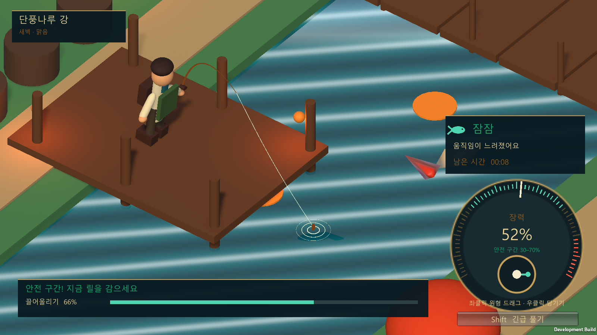
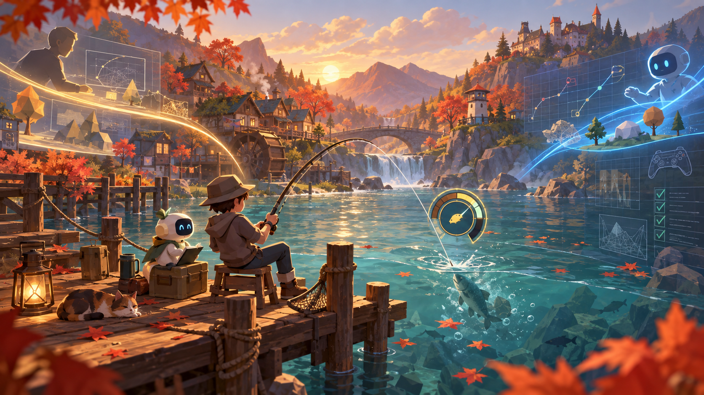

소개
좋은 게임 디자인은 문서 안에서 끝나지 않고, 플레이어의 손끝에서 이해되어야 한다고 생각합니다.
게임의 핵심 반복 구조를 설계하고, Unity에서 빠르게 구현한 뒤, 실제 화면과 테스트 결과를 근거로 다시 다듬습니다. 결과뿐 아니라 실패한 가설과 수정 이유도 개발 기록으로 남깁니다.
Game Design
Prototyping
Documentation
Playtest
프로젝트
현재 공개 가능한 작업을 깊이 있게 정리했습니다.

PROJECT 01UNITY · GAME DESIGN · WORK IN PROGRESS
낚시 생활 콘텐츠
프로토타입
낚는 순간의 손맛을 판매·수집·전시로 이어지는 생활 콘텐츠 루프로 확장한 플레이 가능한 프로토타입입니다.
프로젝트 자세히 보기 ↗2,180자동 검증 조건
4검증 해상도
Unity 6프로토타입 엔진
WIP현재 상태
개발 일지
완성된 결과보다 선택과 수정의 이유를 기록합니다.
작업 방식
- 01
Define
플레이어가 내려야 할 판단과 시스템의 목적을 한 문장으로 정리합니다.
- 02
Prototype
핵심 루프를 가장 작은 플레이 가능한 형태로 구현합니다.
- 03
Validate
해상도, 상태 전이, 데이터 무결성을 반복 가능한 조건으로 검증합니다.
- 04
Learn
실패한 가설과 다음 질문까지 기록해 다음 반복의 출발점으로 만듭니다.